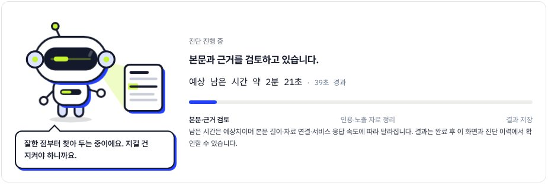

VIDEOudit · AIOudit
두 서비스의 끝말
영상 진단 VIDEOudit과 웹페이지 진단 AIOudit은 둘 다 ‘dit’으로 끝나요. 딧은 두 서비스가 함께 쓰는 이름이자, 두 서비스를 잇는 얼굴이에요. 한쪽에서 만난 딧을 다른 쪽에서 다시 만나도 같은 딧이에요.
CHROMETI · OUR CHARACTER
당신이 보낸 신호가 AI에게 닿았는지, 딧이 먼저 확인해요. 웹페이지 진단 AIOudit과 영상 진단 VIDEOudit이 함께 쓰는 CHROMETI의 진단 로봇입니다.
−·· ·· − 모스부호로 쓴 DIT
AIOudit딧이 한 줄씩 읽고 있어요.
01 / The name
VIDEOudit · AIOudit
영상 진단 VIDEOudit과 웹페이지 진단 AIOudit은 둘 다 ‘dit’으로 끝나요. 딧은 두 서비스가 함께 쓰는 이름이자, 두 서비스를 잇는 얼굴이에요. 한쪽에서 만난 딧을 다른 쪽에서 다시 만나도 같은 딧이에요.
모스부호에서 dit은 점 하나 ‘·’예요. 모든 메시지는 이 점 하나에서 시작해요. 두 서비스 로고 앞의 점, 딧의 안테나 끝 점도 같은 뜻이에요.
02 / The story
사라지는 신호를
붙잡으려고 만든 로봇.
매일 수많은 영상과 페이지가 올라와요. 하지만 AI의 귀와 눈에 닿는 건 그중 일부뿐이에요. 나머지 신호는 아무도 모르게 사라져요. 며칠 들인 영상도, 몇 년 쌓은 사이트도요.
크로메티 연구실은 그 사라지는 신호를 붙잡으려고 딧을 만들었어요. 딧은 당신의 신호가 AI에게 닿았는지 먼저 확인하고, 닿지 않았다면 무엇을 고치면 되는지 알려 줘요. 사람들이 검색 대신 AI에게 묻기 시작한 지금, 딧의 일은 점점 더 중요해지고 있어요.
03 / Built to read signals
04 / One DIT, two services


05 / What DIT says
고객이 물어볼 만한 질문을 떠올리는 중이에요.
AIOudit · 진단 중딧이 자막을 한 줄씩 듣고 있어요.
고칠 문장은 바로 붙여 넣을 수 있게 다듬고 있어요.
AIOudit · 진단 중시청자가 검색할 만한 말을 떠올리는 중이에요.
AI가 우리 페이지를 어떻게 읽는지, 곧 보여 드릴게요.
AIOudit · 진단 중다 읽었어요! 아래 리포트를 확인해 보세요.
딧은 미리 정해 둔 안내만 말해요. 대화형 상담 챗봇이 아니라서, 진단 기준을 캐묻는 질문에는 대답하지 않아요.
06 / DIT's promises
고칠 곳만 늘어놓지 않아요. 이미 잘하고 있는 부분은 지키도록 먼저 알려 드려요.
확인하지 못한 건 0점이 아니라 ‘측정 안 함’으로 보여 드려요. 근거 없는 판정은 하지 않아요.
딧이 어떻게 읽는지는 크로메티 연구실의 비밀이에요. 대신 무엇을 고치면 되는지는 문장까지 모두 알려 드려요. 증명은 결과로 해요.
07 / Six faces
Meet DIT at work
딧은 CHROMETI가 처음부터 새로 그린 캐릭터예요. 서비스 이용 중 궁금한 점은 help@chrometi.com으로 보내 주세요.